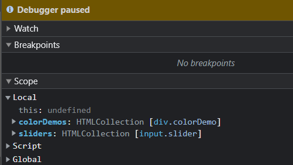

Wat voor soort waarde zit er in die variabelen?
Hoeveel elementen zitten er in elke verzameling?
Zo veel dat ik opgegeven ben met ze te tellen.
Kun je uit de HTML code afleiden waarom er dit precies zoveel zijn?
Neen.
Klik op het driehoekje naast de sliders lokale variabele zodat je het eerste element kunt zien. Op welke
index positie in de lijst staat dit element?
[0], dus het eerste positie.